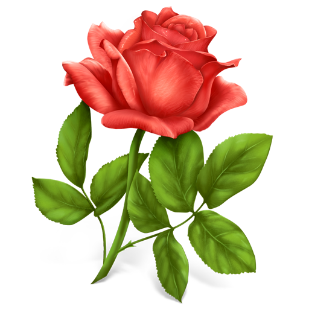

Novela de aventura
La novela de aventuras es un género narrativo literario que narra los viajes, el misterio y el riesgo.

Literatura de horror
La literatura de horror es un género de ficción literario que pretende o tiene la capacidad de asustar, causar miedo o aterrorizar a sus lectores.

Novela romántica
En la novela romántica normalmente suele ser el amor, ya sean amores imposibles o amantes que vencen todas las dificultades que se interponen entre ellos.
1. Tómate tu tiempo
No comprés o elijas lo primero que ves. Intentá estar sólo y sin ninguna distracción. La clave para no abandonarlo luego es estar seguro de que has elegido un buen libro y con la temática que a ti te gusta.
2. Elegí bien la temática y la sub-temática
Buscá algo que te atraiga, pero no te fijes tan solo en el título lee un poco el contenido antes. Sobre todo no elijás libros con una temática que te puede aburrir.
3. No compres más de 1 libro
Controlate y selecciona uno que sepas que vas a leer ya que si lo hacés en cantidad corrés el riesgo de que se queden en la estantería acumulando polvo.
4. Lee en formatos cómodos
Si no estás acostumbrado a leer en formato digital no te fuerces, ya que lo abandonarás enseguida. Lo mismo si estás acostumbrado a leer en la calle o mientras viajás, elegí formatos de bolsillo y tapas blandas que faciliten su traslado.
5. Eligí autores que ya has leído
Si leíste el libro de un autor y te gustó, probablemente te gustará otro libro del mismo. Siempre es mejor bueno conocido que lo malo por conocer. Igualmente para que tu lectura no se vuelva monótona podés buscar autores similares o aceptar recomendaciones de amigos o conocidos que compartan los mismos gustos.
6. Cambiá los regalados
Este consejo aplica para cualquier categoría. Si no tenés la posibilidad de orientar a la persona que te va a regalar un libro, fijate de poder cambiarlo o intercambiarlo con alguien que sepas que puede gustarle. Es preferible esta acción que el mismo quede descansando por siempre en tu biblioteca.